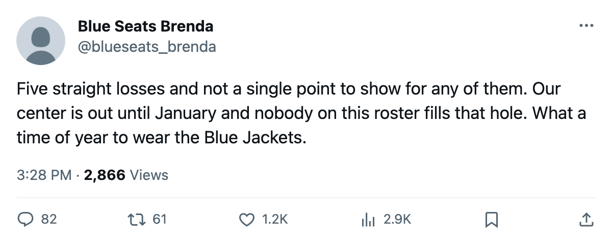

The Slide: Columbus Has Lost 5 Straight and Earned Zero Points
The Blue Jackets were a 24-point club in 15 games before the losing streak. They are a 24-point club in 20 games now
 Ray CallumSenior correspondent · Home Ice Network
Ray CallumSenior correspondent · Home Ice Network Columbus Blue Jackets has lost 5 straight and collected no points in any of the 5. The Blue Jackets were a 24-point club in 15 games before the slide began. They are a 24-point club in 20 games now.
Columbus Blue Jackets has lost 5 straight and collected no points in any of the 5. The Blue Jackets were a 24-point club in 15 games before the slide began. They are a 24-point club in 20 games now.  Todd Marchant82 is out with a knee until January 30.
Todd Marchant82 is out with a knee until January 30.
Before the losing stretch, Columbus had 11 wins in 15 games, including 4 in overtime, good for 4th in the Western Conference. The 5 games since added 5 regulation losses and zero points. The overtime loss column has not moved, which means the Blue Jackets have not even managed to force a fifth man on the ice in any of them.
The 2 games since the last edition followed the pattern. Columbus Blue Jackets lost 2-3 to  San Jose Sharks at home on November 20 and fell 1-2 at
San Jose Sharks at home on November 20 and fell 1-2 at  Buffalo Sabres on November 22. Columbus scored 3 goals and allowed 5.
Buffalo Sabres on November 22. Columbus scored 3 goals and allowed 5.
Marchant's knee is his 3rd injury spell of the season and the longest by a wide margin. The first 2 were brief. This one runs through January 30. Columbus has logged 14 injury spells and 97 days lost as a club, and Marchant's absence is the one the roster cannot replace, not tonight and not for the next two months.
The Blue Jackets sit 4th in the Western Conference at 24 points, with  Detroit Red Wings,
Detroit Red Wings,  Calgary Flames, and
Calgary Flames, and  Vancouver Canucks all 1 point behind at 23. The cushion above the 8th spot, where
Vancouver Canucks all 1 point behind at 23. The cushion above the 8th spot, where  Minnesota Wild and
Minnesota Wild and  Colorado Avalanche sit at 22 points, is 2 points.
Colorado Avalanche sit at 22 points, is 2 points.
Columbus hosts  Edmonton Oilers on November 27, the first meeting between the clubs this season. Edmonton Oilers is 5-9-2 at 20 points and has lost its own center,
Edmonton Oilers on November 27, the first meeting between the clubs this season. Edmonton Oilers is 5-9-2 at 20 points and has lost its own center,  Daymond Langkow75, to an elbow through December 14.
Daymond Langkow75, to an elbow through December 14.
